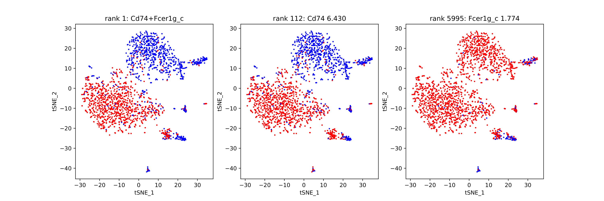
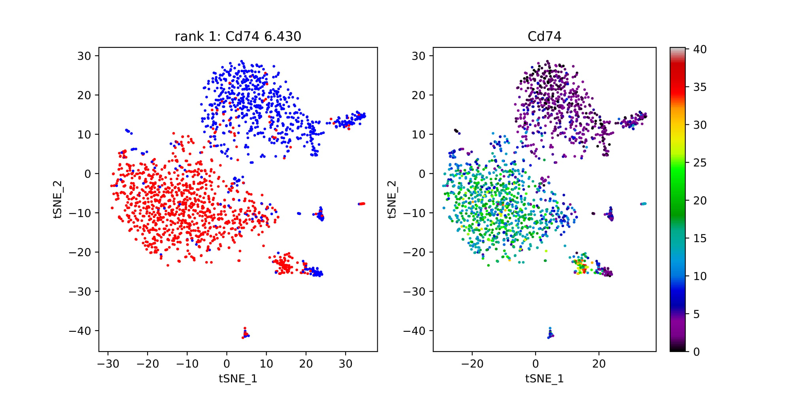
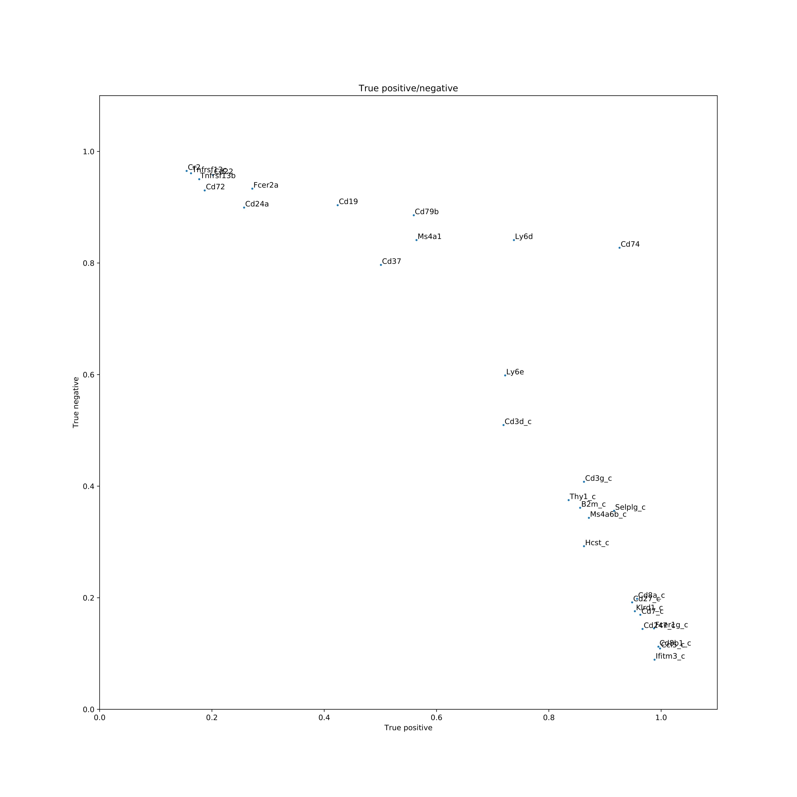

Output¶
Following are examples of COMET output. Descriptions of statistical values can be found in the details section of the manual.
Comet outputs two folders, one with ranked marker panel lists and one with helpful visualizations for the top ranked marker panels. The data folder contains all of the ranked marker panel lists (see below) ordered by the cluster of interest which is stated in the file name. The vis folder contains folders for each cluster (see below) as well as the TP/TN plos for each cluster (see below). Each sub-folder in vis contains png files of different helpful visualizations of the data. The metadata file and pickles folder are for future developments and are currently not utilized.
For each cluster the following output files will be generated:
Candidate marker panel output files:
singleton_all_ranked: Single gene marker list containing the overall rankings based on the xl-mHG p-value and the absolute fold change. Includes genes with True Positive value greater than 0.15 and negation genes if they have a True Negative value of greater than 0.5 .singleton_positive_markers_ranked: Single gene marker list as above, except without the negation genes. Useful if the focus is on positive markers.singleton_full_unranked: ALL single genes, with no rank. Useful for finding genes that did not pass the thresholds in singleton_all_rankedpair_final_ranking: Gives the gene-pairs ordered based on our ranking system of statistical relevance. Does not include all pairs.pair_full_unranked: Gives ALL gene-pairs with no ordering and no rankings. Useful for looking at pairs that did not show up in the ranked list._trips: Three gene marker panels ranked (if enabled)._quads: Four gene marker panels ranked (if enabled).
CSV pair output example :

Singleton-only CSV output example :

Visualization Directories:
Shown below is t-sne format, but any two-dimensional visualization method is fine to use as input to COMET.
pairs_as_singletons: Gives the discrete and continuous plot for the single genes of the top performing pairs.

discrete_pairs: Discrete only plots that show a pair of genes each. Gives a visualization of the discrete dual-expression alongside each single gene’s discrete expression.

singleton: Plots that show the discrete and continuous version of the top performing single genes.

Pair_TP_TN: True positive/ True negative values for the top gene pairs.

Singleton_TP_TN: true positive / True negatives values for the top single genes.

Results shown here are using the Mouse Cell Atlas database (Han et. al. 2018)